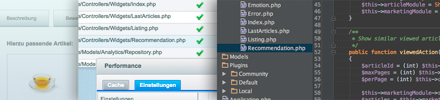

<h2>Guides</h2>
<ul class="guide-list">
    <li><a href="{{ site.url }}/sysadmins-guide/system-requirements/">System requirements</a></li>
    <li><a href="{{ site.url }}/sysadmins-guide/installation-guide/">Installation guide</a></li>
    <li><a href="{{ site.url }}/sysadmins-guide/update-guide/">Update guide</a></li>
    <li><a href="{{ site.url }}/sysadmins-guide/shopware-5-performance-for-sysadmins/">Performance guide for system administrators</a></li>
    <li><a href="{{ site.url }}/sysadmins-guide/elasticsearch-setup/">Elasticsearch setup</a></li>
    <li><a href="{{ site.url }}/sysadmins-guide/varnish-setup/">Varnish setup</a></li>
    <li><a href="{{ site.url }}/sysadmins-guide/memcached-as-session-handler/">Memcached Session Handler</a></li>
    <li><a href="{{ site.url }}/sysadmins-guide/shopware-cluster-setup/">Cluster setup guide</a></li>
</ul>
